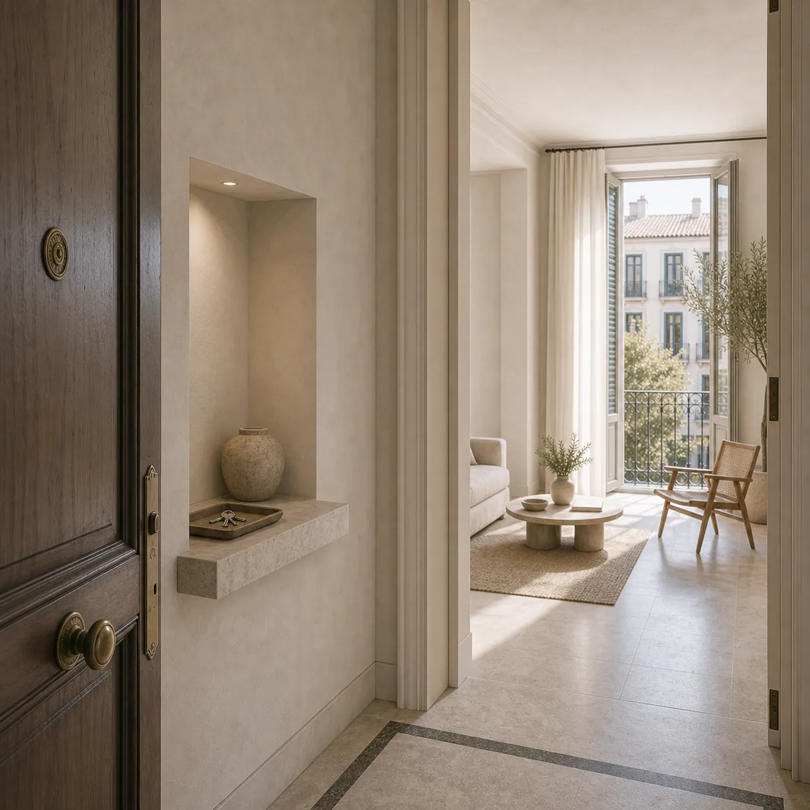
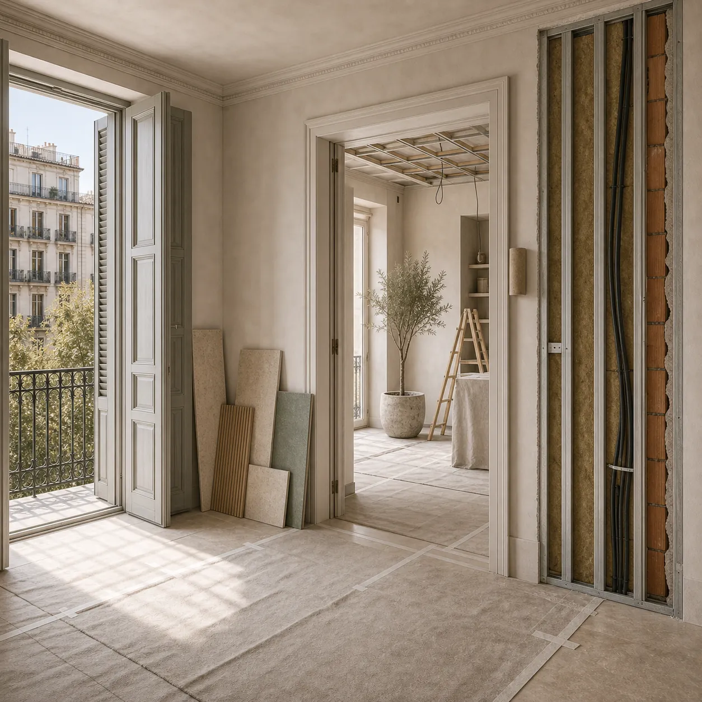
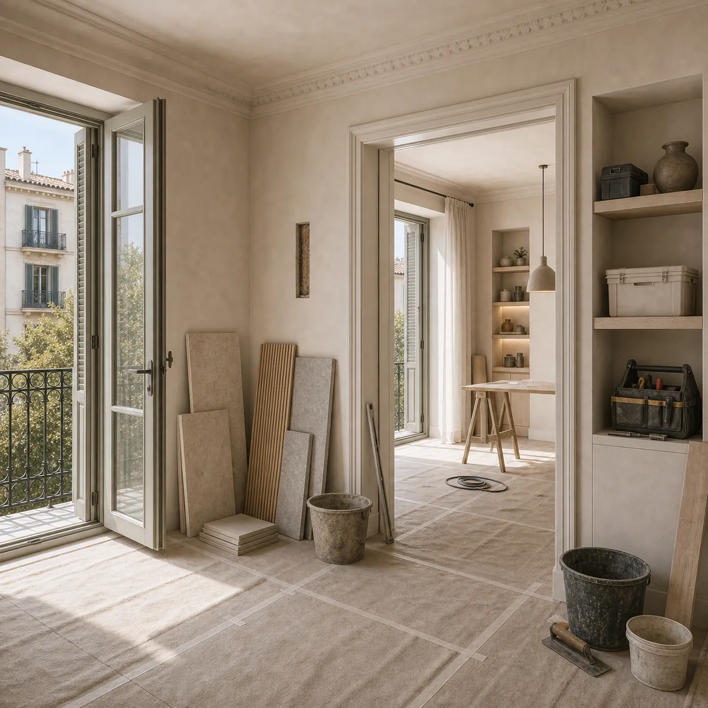
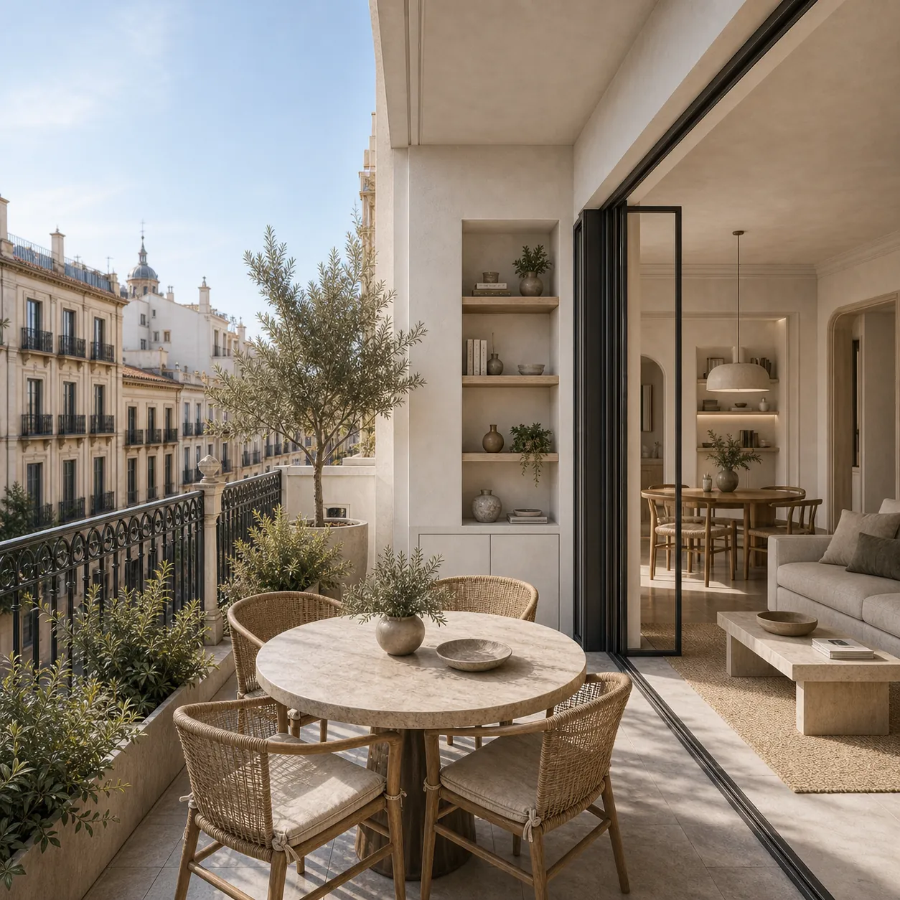
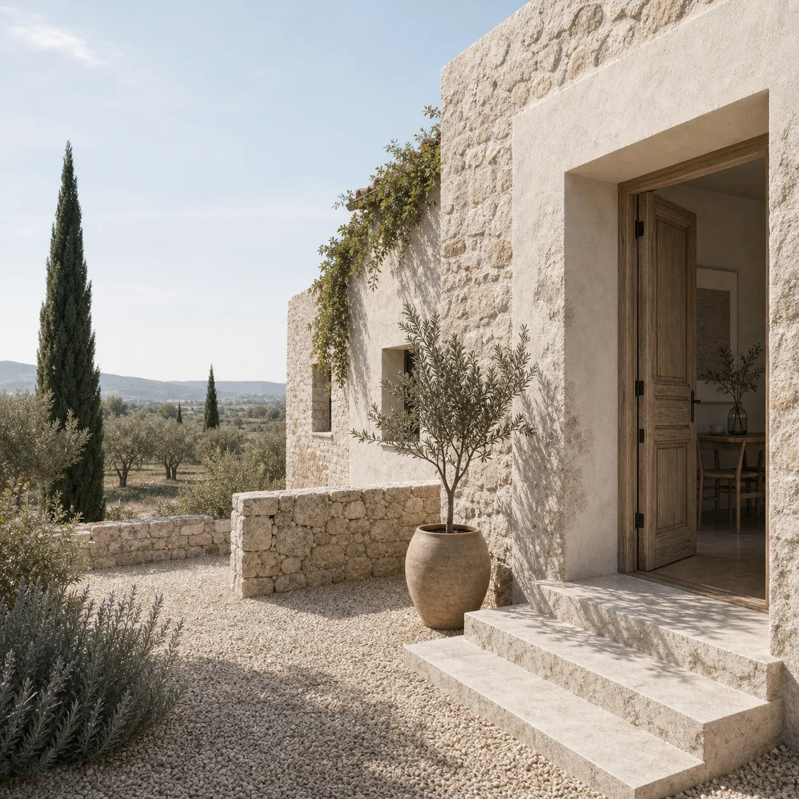
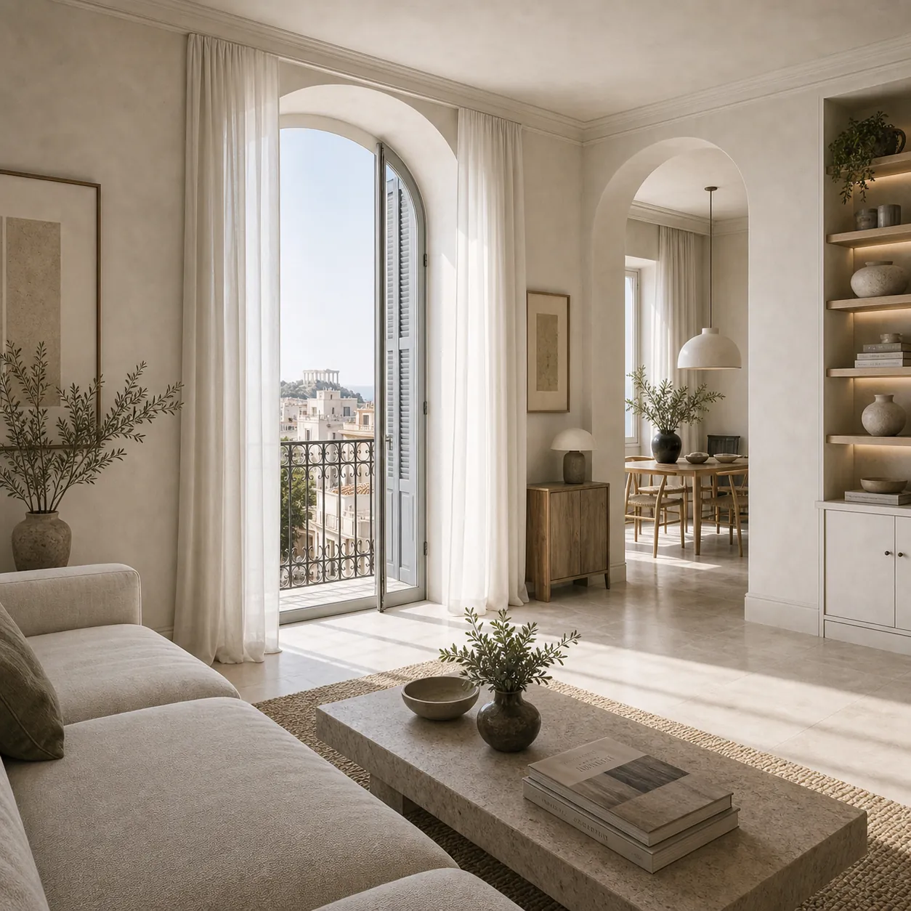

Featured
FeaturedHow Wolfblanc Works Across Spain, Sweden, and Greece: One Practice, Three Countries
Wolfblanc operates with architecture licenses, completed projects, and local teams in Spain, Sweden, and Greece. How a genuinely cross-border practice works in practice, and what it means for international clients.
Read article →
Architecture and BIM as an Information System
How architecture, BIM, and information management help complex residential, hospitality, commercial, and development projects stay coordinated across Spain, Sweden, and Greece.
Read article →
Stockholm BRF Renovation: Board Approvals, Permits and What Foreign Owners Get Wrong
How BRF board approvals, building permits and renovation rules work in Stockholm. A practical guide for international apartment owners and investors.
Read article →
Architecture in Mallorca: Renovations, Villas and What Foreign Buyers Should Know
A practical guide to architecture and renovation in Mallorca for foreign buyers: villas, fincas, permits, protected land, costs and due diligence.
Read article →
Renovating an Apartment in Barcelona: Permits, Costs and Common Mistakes
What foreign owners should know before renovating an apartment in Barcelona: permits, costs, building constraints, community rules and common renovation mistakes.
Read article →
Buying and Renovating Property in Valencia as a Foreigner
A practical guide for foreign buyers in Valencia: neighborhoods, renovation risks, permits, costs, architects, contractor coordination and what to check before buying.
Read article →
Architecture in Thessaloniki: Neighborhoods, Building Stock and Renovation Opportunities for Buyers
A practical guide to Thessaloniki architecture and renovation: best neighborhoods, building types, permit process, costs and what foreign buyers should know.
Read article →
Architecture in Marbella: Villas, Renovations and What International Buyers Should Know
A practical guide to architecture in Marbella for international buyers: villas, renovations, permits, costs, due diligence and common project risks.
Read article →
Luxury Villa Project Management in Marbella: How Foreign Investors Control Cost, Licenses and Contractors
Building or renovating a luxury villa in Marbella is not only a design problem. For foreign investors, the real risk is controlling licenses, contractors, procurement, cost changes and site decisions from another country.
Read article →
Boutique Hotel Renovation in Spain: Why FF&E, Licensing and Opening Readiness Must Be Managed Together
A boutique hotel renovation in Spain does not fail only because the design is weak. It fails when licensing, procurement, FF&E, contractors, staff readiness and the booking launch are managed as separate projects.
Read article →
Commercial and Hospitality Architecture in Madrid: What Makes a Space Actually Perform
Commercial and hospitality spaces succeed or fail on operational performance, not just aesthetics. How architecture drives customer flow, staff efficiency, and brand experience in Madrid restaurants, hotels, and retail spaces.
Read article →
What Nobody Tells You Before Hiring an Architecture Studio
The fear most people carry into the process of hiring an architect is rarely about money or timelines. It is about attention. Whether the person who understood your project in the first meeting will still be paying attention to it in month four. That fear is worth examining honestly.
Read article →
The Story Behind Wolfblanc: Where Instinct Meets Precision
The story behind the Wolfblanc name, the thinking behind the practice, and why an architecture studio founded on the tension between instinct and precision continues to define what we build and how we work.
Read article →How Wolfblanc Works Across Spain, Sweden, and Greece: One Practice, Three Countries
Wolfblanc operates with architecture licenses, completed projects, and local teams in Spain, Sweden, and Greece. How a genuinely cross-border practice works in practice, and what it means for international clients.
Read article →
Designing with Purpose: Wolfblanc's Approach to Sustainability
Sustainability at Wolfblanc is not a certification exercise. It is a design methodology applied to every project. How the studio approaches energy performance, material choices, and long-term building resilience across Spain, Sweden, and Greece.
Read article →
Madrid Renovation Guide 2026: Costs, Permits & Timeline
A complete 2026 guide to renovating in Madrid, realistic costs per square metre, permit types and timescales, contractor selection, and how to run a project in Spain’s capital without the most common mistakes.
Read article →
Buying Property in Madrid as a Foreigner: What Your Architect Wants You to Know Before You Sign
Before you sign on a Madrid property, your architect wants you to know what renovation actually costs, what requires permits, and what the building will and won’t allow. A guide for foreign buyers in Madrid.
Read article →
Hiring an Architect in Spain or Greece When You Don't Live There
Managing a renovation or build in Spain or Greece from another country is a different problem from doing it locally. The risks are specific, the regulatory systems are unfamiliar, and the consequences of hiring the wrong studio are harder to catch and more expensive to fix. Here is what you need to know before you start.
Read article →
Buying and Renovating a Second Home in Spain: What International Buyers Need to Know
Buying a second home in Spain involves more than property law and tax, the renovation reality catches most international buyers off guard. A practical guide to the process, costs, and decisions that determine the outcome.
Read article →
Wellbeing by Design: How Architecture Affects Your Health, Mood, and Daily Life
Architecture directly affects your health, sleep, mood, and daily energy levels. How specific design decisions (light, acoustics, air quality, spatial proportion) create measurable wellbeing outcomes in residential spaces.
Read article →
Renovation Mistakes That Cost More to Fix Than the Original Work: What to Avoid in Any Country
The renovation mistakes that cost the most to fix are rarely exotic. They’re the same patterns repeated across projects in Spain, Sweden, and Greece. What they are, why they happen, and how to avoid them.
Read article →
Scandinavian Design Principles Applied to Homes in Spain and Greece: Why Nordic Methodology Travels Well
Scandinavian design is more than a visual style. It’s a methodology. Why Nordic principles around light, function, material honesty, and spatial restraint translate so well to homes in Spain and Greece.
Read article →
Designing a Home for Both Summer and Year-Round Living: Lessons from Spain, Sweden, and Greece
Designing a home that performs well in both summer and winter requires different decisions in Spain, Sweden, and Greece. What architecture can do to make year-round living genuinely comfortable across all three climates.
Read article →
Climate-Responsive Architecture: What Spain, Sweden, and Greece Have to Teach Each Other
Spain, Sweden, and Greece have each developed centuries of climate-responsive building knowledge. What each tradition does well and what southern European architecture can learn from Nordic standards, and vice versa.
Read article →
Energy-Efficient Homes in Sweden: What the Nordic Building Standard Looks Like and What It Means for Southern Europe
Sweden's building standards are among the most rigorous in the world for energy performance and indoor climate. What the Nordic benchmark looks like and what it means for renovation projects in southern Europe.
Read article →
Buying Property in Sweden as a Foreigner: What the Market, Building Culture, and Renovation Process Look Like
Buying property in Sweden as a foreigner involves bostadsrätt rules, renovation approval processes, and a building culture unlike most of Europe. A practical guide for international buyers considering the Swedish market.
Read article →
Greek Island Property Renovation: What to Know Before You Start on Mykonos, Paros, Santorini or Beyond
Renovating on Mykonos, Santorini, Paros, or another Greek island is one of Europe’s most complex residential projects. Supply chains, heritage rules, island logistics, and permit realities, what to know before you start.
Read article →
The Spanish Horizontal Property Law: What Foreign Apartment Owners Need to Know About Their Comunidad
If you own an apartment in Spain you are legally part of a comunidad de propietarios whether you chose it or not. What foreign owners need to know about fees, voting, and renovation rules under Spanish horizontal property law.
Read article →
Architecture in Athens: Neighborhoods, Building Stock, and Renovation Opportunities for Buyers
Athens is a chaotic city from a planning perspective but contains remarkable renovation opportunities for buyers who look past the surface. A neighborhood-by-neighborhood guide to Athens architecture and residential renovation potential.
Read article →
Renovating Property in Greece as a Foreign Buyer: Permits, Costs, and What Nobody Tells You
Renovating property in Greece as a foreign buyer involves permit systems, cost structures, and practical realities that most guides don’t cover honestly. What you need to know before committing to a Greek renovation project.
Read article →
Architecture and Light: How to Design Any Home to Feel Brighter, More Open, and More Alive
Light is the most designable quality in any home, and the one most often left to chance. How orientation, openings, surfaces, and artificial lighting combine to make any space feel brighter, larger, and more alive.
Read article →
How to Add a Terrace, Extension, or Garden Room to Your Home: Permits, Costs, and What Actually Works
Adding a terrace, extension, or garden room to a home in Spain, Sweden, or Greece involves specific permits, structural constraints, and design decisions. What works, what doesn’t, and what it realistically costs.
Read article →
Building a Pool in Spain, Sweden, or Greece: Permits, Costs, and Design Considerations
Building a pool in Spain, Sweden, or Greece involves permits, ground conditions, climate-specific design decisions, and costs that vary widely. A practical guide to what pool projects actually involve across all three countries.
Read article →
How to Design a Home That Ages Well: Architecture for Long-Term Comfort and Accessibility
A home designed only for who you are today will need expensive adaptation as your life changes. How to design for long-term comfort, accessibility, and adaptability without sacrificing the quality of the space now.
Read article →
Multi-Generational Home Design: How to Make It Work for Families Across Two or Three Generations
Multi-generational living is returning across Spain, Sweden, and Greece. How to design a home that genuinely works for two or three generations, shared spaces, private areas, acoustic separation, and independent access.
Read article →
NIE, NIF, and Getting Set Up to Buy Property in Spain: A Practical Checklist for Non-Spanish Buyers
A step-by-step checklist covering NIE, NIF, bank account setup, and everything non-Spanish buyers need to have in place before completing a property purchase in Spain.
Read article →
Madrid Building Permits Explained: Licencia de Obras, Obra Mayor, Obra Menor and How the Process Works
Licencia de obras, obra mayor, obra menor: Madrid’s building permit system explained clearly. What requires a permit, how long it takes, and how to avoid the costly mistakes that come from skipping the process.
Read article →
The True Cost of Building a House in Spain: An Honest Guide for 2026
Building a house in Spain costs more than most estimates suggest. An honest breakdown of construction costs in Spain for 2026: materials, labour, permits, professional fees, and the contingencies that catch buyers off guard.
Read article →
How to Find and Manage a Contractor in Spain When You Do Not Speak Spanish
How to find, evaluate, and manage a reliable contractor in Spain when you don’t speak Spanish: practical strategies for international buyers navigating the Spanish construction culture.
Read article →
Architect vs. Interior Designer vs. Project Manager in Spain: Who Do You Actually Need?
Architect, interior designer, or project manager: who do you actually need for your renovation in Spain? A clear breakdown of roles, legal responsibilities, and when each professional adds the most value.
Read article →
What to Expect When Working with an Architect in Spain: The Process from First Contact to Handover
Working with an architect in Spain from first contact to final handover typically spans 8 to 24 months. A clear, stage-by-stage guide to what happens, who is responsible for what, and how to stay in control throughout.
Read article →
Madrid Real Estate Investment and Architecture: How Design Decisions Directly Affect Rental Yield and Resale Value
Architecture decisions directly affect rental yield and resale value in Madrid’s property market. How layout, light, finish quality, and spatial design move the numbers: a guide for property investors in Madrid.
Read article →
Buying a Rural Property in Spain: What You Need to Know About Land Classification, Building Rights, and Renovation
Land classification in Spain determines what you can build, renovate, or even legally inhabit. A practical guide to rústico, urbano, and urbanizable land for international buyers considering rural property in Spain.
Read article →
The Golden Visa in Greece: What Architects Want Property Investors to Know
The Golden Visa programs in Greece and Spain offer residency through property investment, but the rules, thresholds, and eligible property types keep changing. What architects and property investors need to know in 2026.
Read article →